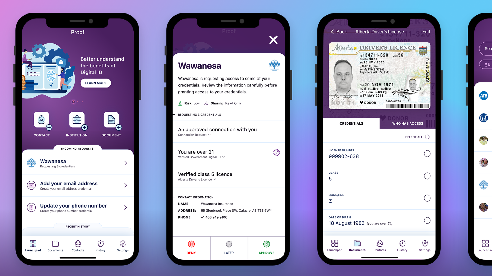
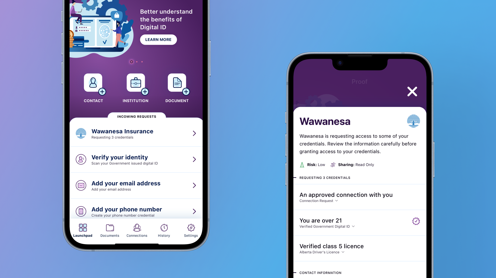
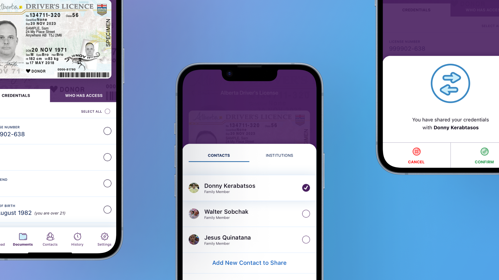
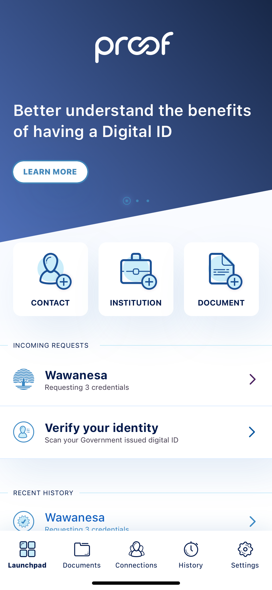
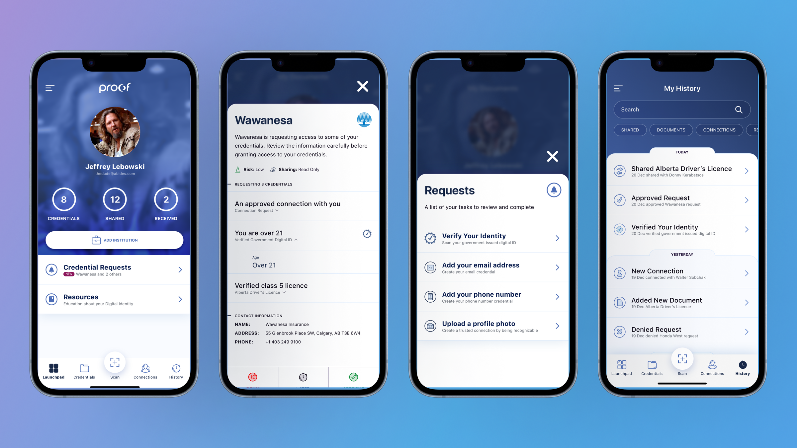

Rümi
Making homeownership feel manageable, without pretending it's simple.
- Focus
- Personalization
- Task system
- Scope
- Mobile app
- Context
- Client: ATCO
- Homeowners
Proof let people share identity documents from their phone and control who saw them.
Proof was a digital identity product for Alberta residents that would let people store, open and share their personal information securely from the phone they already carry.



Paper records are hard to organize, easy to lose, and rarely at hand when people need them. Putting them on a phone creates a different problem.
People needed to feel confident that their identity was secure, that sharing was intentional, and that they could control exactly who had access to what.
Sensitive actions had to feel deliberate. Every request had to be easy to see, understand, and approve or deny, without anyone feeling they'd handed over more than they meant to.
This meant designing around trust as much as access.
There was no comparable product to learn from, so research looked at how people already handled identity, documents and proof of ownership in real life.
The team looked at existing behaviors around MyAlberta Digital ID and interviewed Albertans to find practical use cases, like buying a car, getting insurance, and dealing with healthcare providers.
The MVP centered on a launchpad, one screen with documents, trusted contacts, institutions and incoming requests.
That foundation gave the product a clear starting point. Show people what they have, what needs attention, and what actions are available.

Proof had to work in stressful moments too, when someone else might need to act for the user.
A trusted contact could access delegated credentials, like identification, insurance details, or medical proxy information, when immediate action was needed.
Users could manage who had access to each document and control which fields were shared.
The sharing flow ended with a confirmation step, so people knew what they were sharing, who with, and how much access they were granting.

Proof needed to feel secure and easy to understand on every platform. The style guide set the basics: color, typography, spacing, buttons and the core tile components.
It also gave engineering a framework they could build from, so the product felt trustworthy from screen to screen.
The design system held the MVP together while the product tried out unfamiliar ideas around identity, delegation and secure sharing.
For a new kind of product, that consistency made it easier to understand and easier to believe in.


Early concepts leaned heavily on education, explaining the benefits of digital identity and what the product could do.
Testing showed it felt too much like a content app. People expected something more personal, built around their own identity.
The design moved a profile to the center, so people could see what the app did and what they could do next.
That brought the product closer to what people actually needed, which was managing their identity day to day.

The refined product brought documents, requests, trusted contacts, institutions, and activity history into a clearer structure.
Users could respond to credential requests, manage access, review their history, and understand the state of their identity without having to piece the system together themselves.
Sensitive workflows were designed to slow people down just enough to understand what was happening, without making the product feel heavy.
That balance was most of the work. Identity had to get easier to use without ever feeling casual.

Proof would have let people manage, share and delegate their identity documents without paper records or scattered processes.
Before the product could launch, priorities shifted and the initiative was paused. The problem hasn't gone away. People still need to share sensitive information safely, sometimes in a hurry, and sometimes through someone acting for them.
The biggest lesson was that digital identity is a trust problem more than a storage problem.
Design had to make the system feel useful without making it feel risky.
Every request, permission and share showed the person what they were handing over, and to whom.
Making homeownership feel manageable, without pretending it's simple.